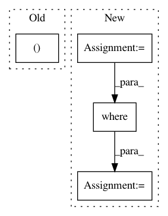

6bf3f51cd0a312da842157665663c2dad9983248,tensorflow_ranking/python/losses_impl.py,ClickEMLoss,_compute_latent_prob,#ClickEMLoss#,914
Before Change
exam_prob_given_non_clicks = exam_prob * (1 - rel_prob) / prob_non_clicks
rel_prob_given_non_clicks = (1 - exam_prob) * rel_prob / prob_non_clicks
exam_prob_given_non_clicks, rel_prob_given_non_clicks = [
tf.stop_gradient(
tf.compat.v1.where(is_clicked, tf.ones_like(prob), prob))
for prob in [exam_prob_given_non_clicks, rel_prob_given_non_clicks]
After Change
with tf.compat.v1.name_scope(name="compute_latent_prob"):
is_clicked = tf.greater_equal(tf.cast(clicks, tf.float32), 1.0)
exam_logits_posterior = exam_logits - tf.math.softplus(rel_logits)
rel_logits_posterior = rel_logits - tf.math.softplus(exam_logits)
exam_prob_posterior = tf.compat.v1.where(
is_clicked, tf.ones_like(exam_logits_posterior),
tf.sigmoid(exam_logits_posterior))
rel_prob_posterior = tf.compat.v1.where(
is_clicked, tf.ones_like(rel_logits_posterior),
tf.sigmoid(rel_logits_posterior))
return tf.stop_gradient(exam_prob_posterior), tf.stop_gradient(
rel_prob_posterior)
def compute_unreduced_loss(self, labels, logits):
In pattern: SUPERPATTERN
Frequency: 3
Non-data size: 4
Instances
Project Name: tensorflow/ranking
Commit Name: 6bf3f51cd0a312da842157665663c2dad9983248
Time: 2021-01-29
Author: xuanhui@google.com
File Name: tensorflow_ranking/python/losses_impl.py
Class Name: ClickEMLoss
Method Name: _compute_latent_prob
Project Name: tensorly/tensorly
Commit Name: 4d96f8c9a0c98df0a422cc498b86a6b5563f5b49
Time: 2020-08-06
Author: jean.kossaifi@gmail.com
File Name: tensorly/decomposition/candecomp_parafac.py
Class Name:
Method Name: parafac
Project Name: mahyarnajibi/SNIPER
Commit Name: ce9e61f795ab62c0d1b0823444483235a02040f7
Time: 2018-05-08
Author: mahyarnajibi@gmail.com
File Name: lib/metric.py
Class Name: VisMetric
Method Name: update